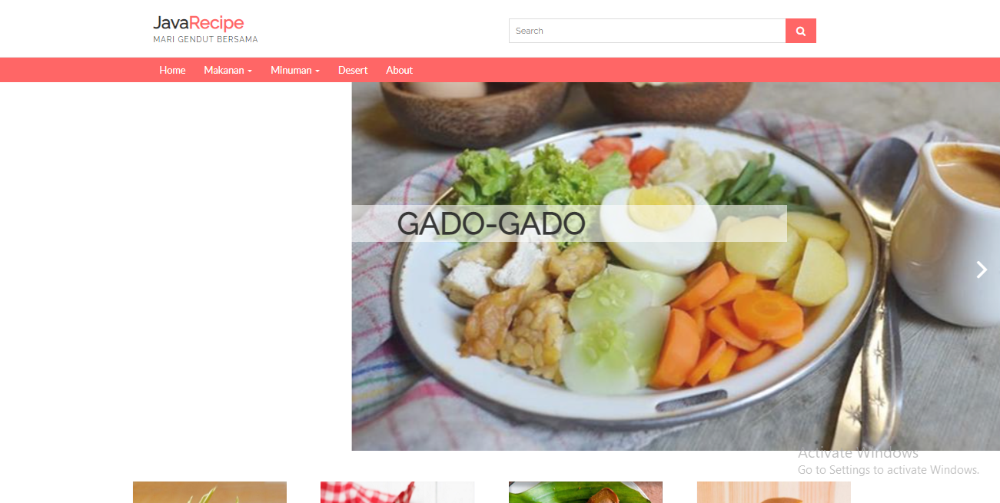
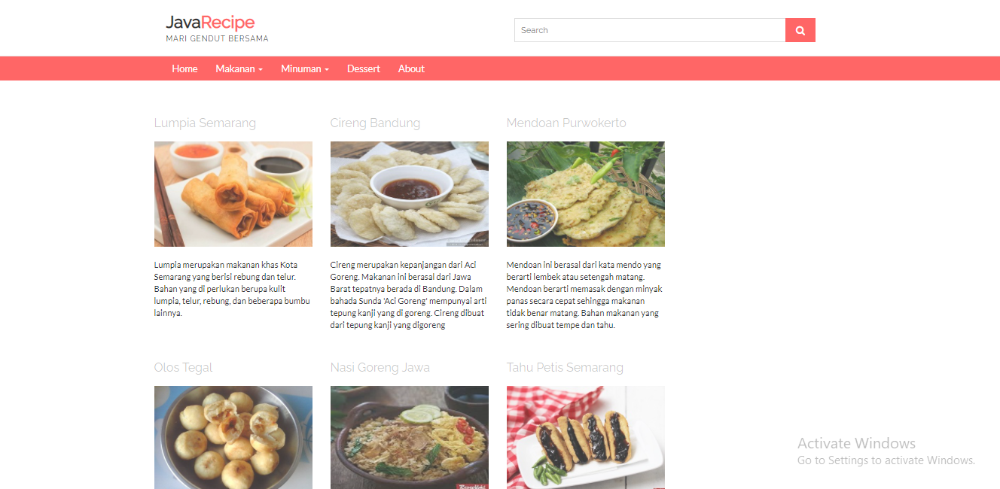

Java Recipe
Project berbasis website ini digunakan untuk menyelesaikan mata kuliah Interaksi Manusia dan Komputer (IMK). Website ini hanya bagian front-end saja yang dapat berjalan.
Pada website ini hanya berisi kumpulan resep-resep makanan, minum serta dessert jawa yang dapat membantu orang lain yang ingin belajar memasak.
Website ini juga sudah memenuhi beberapa prinsip dasar desain antarmuka aplikasi, misal user compatibility, task compatibility, work flow compability, consistency, easy of learning dan lainnya.
Yang digunakan untuk membuat website :
- - Sublime
- - HTML
- - CSS
Menu Makanan
